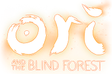

Uma biblioteca de variedades
Alguns indies se destacam pela sua identidade visual marcante
(o que me encanta muito, já que sou apaixonado por coisas visuais)

Alguns outros por sua história impactante
Resumo: Uma jovem passa por estágios do luto em um mundo em constante transformação.
Por que me tocou: A narrativa não usa palavras, só arte e música — e mesmo assim emociona profundamente. Me fez refletir sobre perda e superação.
Resumo: Madeline escala uma montanha enquanto lida com ansiedade e autoaceitação.
Por que me tocou: Me ensinou que nossos desafios internos são reais, mas superáveis. A forma como o jogo trata saúde mental é incrível.
Ou por sua gameplay única
Apesar disso, apenas dois brigam pelo título de "O MELHOR"
(pelo menos para mim)
Hollow Knight (2017) - Team Cherry
Por que me tocou:
Hollow Knight foi o primeiro jogo indie que eu joguei - ou pelo menos o primeiro que eu lembro de conhecer por esse termo. A jornada pelas terras de Hollownest me mostrou o que é possível realizar quando se trabalha com calma e amor em um projeto. Por ser um jogo tão bom, deixou uma marca em mim e formoy uma ótima primeira impressão dos jogos independentes.
Os cenários que o jogador passa durante o jogo são de brilhar os olhos, e as músicas são lindas (em especial, a trilha sonora da Cidade das Lágrimas). Portanto, acredito que todos que gostam de videogame deveriam jogar esse jogo pelo menos uma vez.
Outer Wilds (2019) - Mobius Digital
Por que me tocou:
A minha história com Outer Wilds é até engraçada. Um amigo meu sempre falava para eu jogar, mas sempre que eu perguntava do que se tratava, ele não me dizia, pois, de acordo com ele, iria estragar a experiência. E bom, ele estava certo. Eu diria que jogar Outer Wilds sem saber de nada sobre ele é o jeito certo. Então, vou evitar falar o máximo possível sobre o jogo em si. Já que você deve experenciar por conta própria.
Mas bem, o que falar sobre o jogo? Ele me ensinou a aproveitar cada momento, pois não sabemos quando não poderemos mais. Também me ensinou que o amanhã ainda é dia, ou seja, está tudo bem ir com calma. E me mostrou que, em muitos casos, os pequenos detalhes podem significar mais que um universo inteiro.
Tudo isso só é possível graças a um conjunto de fatores: a história, a jogabilidade, o universo, os visuais... e a trilha sonora - que me emociona toda vez que eu escuto a música "Travelers".